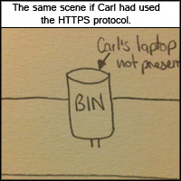

How can I stop this from happening to me?These particular attacks are more designed to work on wireless networks, but can still on wired networks (Ahmed, 2010). Any website that has personal information will require you to log in. Ensure that when you log in to and browse these websites, you are using HTTPS (Hypertext Transfer Protocol Secure). HTTPS encrpyts and decrypts data whereas standard HTTP sends it in plain text. This form of protection completely protects your sessions from being hijacked (Kyrnin, n.d.). When you can see an image of a padlock in the address bar or see "HTTPS://" before the address of the website you are logged in to, you are using HTTPS. There are other indicators, but these are the most popular in browsers such as Google Chrome, Mozilla Firefox and Microsoft Internet Explorer.An example of HTTPS browsing in Google Chrome. |

|